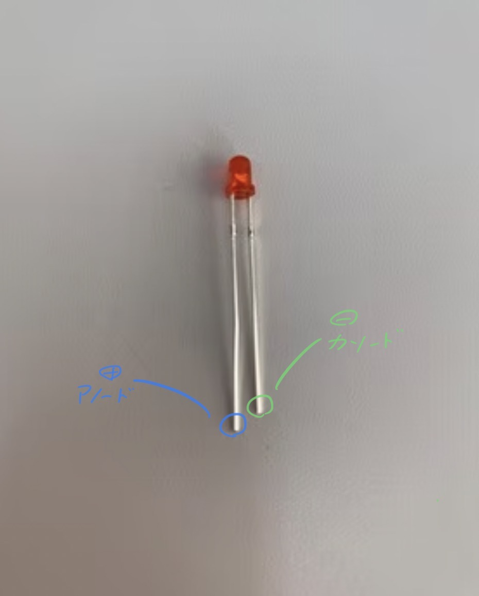
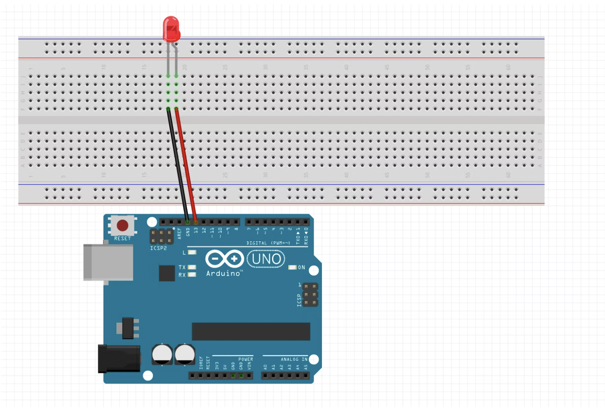
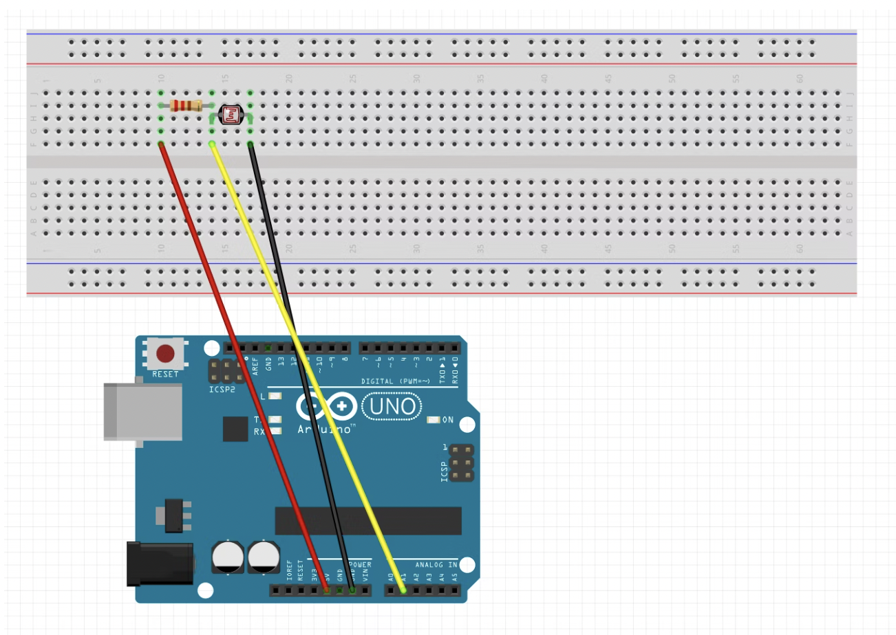

動作に必要な開発システムをArduinoのWebサイトからダウンロードできるオープンソースハードウェア。
- プログラムを書く
- センサーの値を読み込む
- モーターを動かす
- LEDを光らせたりと電子工作
出典：
Arduinoとは？
下準備
ArduinoとPCはUSB(typeA)で接続
(他のtypeの場合、変換必)
設定順番
- ボードの設定
「ツール」→「ボード」→「Arduino UNO/Genuino UNO」を選択
- シリアルポートの設定
「ツール」→「シリアルポート」で接続したUSBを選択
⚠︎一度USBを抜いてみるとどれがArduinoなのかわかりやすい。
ArduinoでLチカ
- Lチカとは？
LEDをチカチカさせることをLチカと言う。
- LEDのプラス、マイナス
長い方が＋、短い方がー。
＋はアノード
ーはカソード
参考

LEDとArduinoのピンを接続
LEDの長い方(＋)を13番ピン
短い方(ー)をGNDにつなげる。
⚠︎↑は5V用に抵抗が入ったものを使っている。そうでないものを使う時は適宜、抵抗を入れること。

Lチカのプログラムは
ここで確認
Arduinoで明るさを測定
明るさセンサー(CdS)で明るさを測定する
CdSセルは暗いところにおくとセンサーの抵抗値が大きくなり、明るいところに置くと抵抗値が低くなる性質を持っている。
配線
ブレッドボードを使って、
Arduinoの5Vー10kΩの抵抗ーCdSセルーArduinoのGNDの流れができるような配線する。
その後、10kΩの抵抗とCdSセルが繋がっている列からArduinoのA1ピンに配線する。

プログラムの確認は
ここで確認
日常の中の負、正の感情
負:悲しみ、不幸、苦痛、憤怒、憎悪、恐怖、自責、後悔、嫌悪、配信感など
正:愛、誇り、挑戦、成功、成就、知恵、可愛い、激励、勇気、許しなど